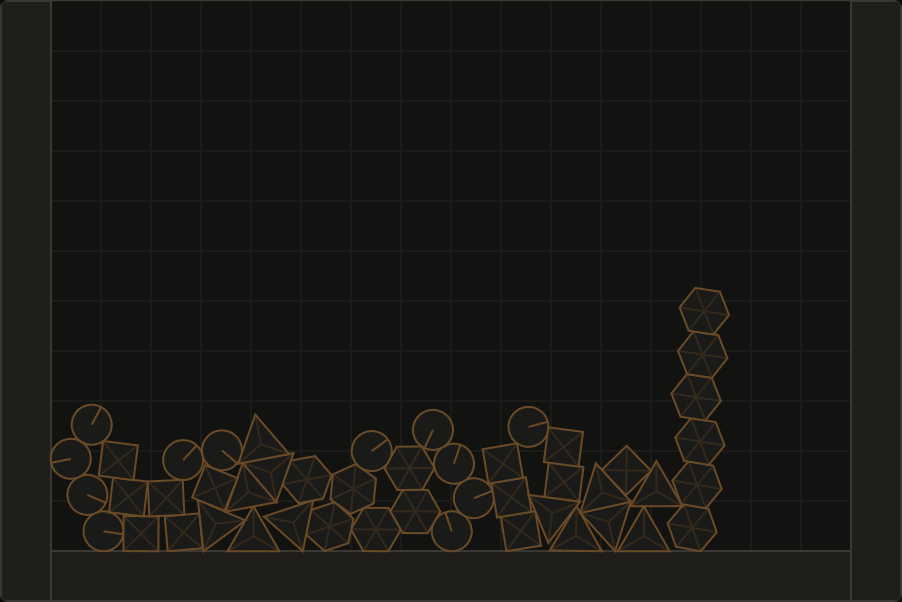

impulse, round two: a soft-step solver and a box that would not sleep
the first Impulse post ended with a list of things that did not work. a ball came back 3.5% too high. a pile of 500 bodies never fell asleep. fast bodies could only be stopped by static walls. round two is me going through that list, and a few things I found on the way. this post grows with every stage, so it is a work log more than a summary.
try it: live demo · source · previous post: building a 2d physics engine from scratch
four stages
| stage | what it added | how it was proven |
|---|---|---|
| 13 | restitution reads the speed before gravity | a bouncing ball returns to within 2% of its drop height |
| 14 | raycast, box overlap query, category, mask and group filters | ray hits and normals match the analytic answer; filters hold for contacts and for continuous collision |
| 15 | a soft-step solver: substeps, soft contacts, a relax pass | every earlier test still passes, towers of 20 boxes still stand and sleep |
| 16 | damping, rolling resistance, and a fix to how spinning circles touch | a rolling ball slows at the textbook rate; a 500-body pile sleeps |
the ball that gained 3.5%
the old step added gravity to every velocity, and then solved the contacts. restitution reads the approach speed when the contact is set up, so the ball hitting the ground was already 9.81 × 1/60 = 0.16 m/s faster than it had been on the last step, and it bounced with that extra speed. over a drop of 4.5 m that is a rebound 3.5% too high.
the fix is an order change, not new math: set up the contacts first, so restitution sees the speed before gravity, and add gravity after. the ball now comes back to 0.9985 of its drop height, and I tightened the test bounds from 0.95 to 1.06 down to 0.98 to 1.02. it was one of the smallest changes of the whole round and it needed the most thinking, because the solver had no place to put "after prepare, before solve", so I split it in two.
asking the world questions
until now the only way to find a body was a point test for the mouse. stage 14 added world.raycast(x0, y0, x1, y1, mask), which returns the closest body, the hit point and the surface normal, and world.boundsOverlapping(box). I did not write a new ray-shape routine. the continuous collision code already sweeps a point against every shape (that is what stops a bullet at a wall), so a ray is that sweep with a radius of zero, plus the normal of the plane it entered through. the test compares circles against the analytic distance, checks a box turned 45 degrees, and a hexagon whose flat side sits at cos 30° from its center.
the same stage added collision filtering with the Box2D rules: a body has a category, a mask and a group. two bodies meet only if each mask contains the other's category, and a shared non-zero group overrides that, positive always colliding and negative never. the check sits in one place for contacts and once more in the continuous collision sweep, and a test covers the second one, because a filtered wall that still stops fast bullets would be an odd bug to meet later.
swapping the solver
the old solver ran 10 iterations of sequential impulses over the contacts, with a 2-point block solver for stability, and pushed overlapping bodies apart after the solve. stage 15 replaced all of that with the idea from Box2D v3 (Erin Catto's soft step): split each step into 4 substeps, and in each substep add gravity, warm start, solve with a soft contact constraint that treats overlap like a stiff, heavily damped spring, move the bodies, then relax: solve again with the bias switched off, so the push-out speed does not turn into energy. restitution is applied once at the end, using the speed measured before the step. that deleted the block solver and the position projection completely.
// one substep, four per step
for (const joint of joints) joint.prepare(1 / substep);
for (const body of bodies) if (body.isSimulated) body.integrateVelocity(gravity, substep);
// warm start, then solve with bias
this.iterate(joints, true);
for (const body of bodies) if (body.isSimulated) body.advance(substep);
// relax: same constraints, no bias
this.iterate(joints, false);the surprise was how little of the test suite noticed. on the first run of the new solver 178 of 184 tests passed. four of the six failures were about things that had changed on purpose: free fall now sums over 4 substeps per step, resting impulses are stored per substep (the test now expects m g dt / 4), a test called "block solver" now says "two-point contacts", and a two-point elastic bounce came back at 1.76 m/s instead of 2 after one restitution sweep, so I run six. the other two were real: bullets flew through the wall. the continuous collision sweep started from the body's position minus its step motion, which is off by a rounding error, and a bullet that had been stopped exactly on the wall's surface was suddenly counted as starting inside it. storing the exact start position fixed both. the towers, the joints, the pendulum periods and the sleeping tests passed untouched.
the one number I had to choose is the contact stiffness. I ran the same towers and pyramids at several values and let the test suite vote:
| contact stiffness | 20-box tower, top box height (ideal 19.5) | tower asleep | pyramid of 210 asleep | test suite |
|---|---|---|---|---|
| 30 Hz | 19.369 | 1.33 s | 0.85 s | all pass |
| 40 Hz | 19.426 | 1.03 s | 0.82 s | all pass, chosen |
| 45 Hz | not measured | not measured | not measured | 2 sleep tests fail |
| 60 Hz | 19.467 | 2.22 s | 1.45 s | 5 tests fail |
| 90 Hz | tower flies apart | not asleep at 10 s | not asleep at 10 s | not run |
stiffer contacts sag less but jitter, and jitter keeps bodies awake longer. 40 Hz is the point where the old tests still hold, not a value from a paper. the 30 Hz and 60 Hz rows were measured with the solver as it stood at that moment; they use boxes only, so the circle fix below cannot have changed them.
the box that would not sleep
the first post admitted that a pile of 500 mixed bodies never fell asleep in 8 seconds. I assumed the solver was too loose. with the new solver it still did not sleep, so I looked at which bodies were actually moving. after 30 seconds every body but one was standing still (0.000 m/s) and that one moved at 0.020 m/s with a spin of 0.063 rad/s. sleeping is per island, and a pile is one island, so one body kept all 500 awake.
that body was a box with a single contact point, rocking back and forth every few seconds, the way a box balanced on a ball would. a real one would lose energy to friction and to the ball sinking into the ground. so I added the missing physics: rolling resistance, a torque limited by the normal force that resists relative spin, and linear and angular damping. the first version made things worse: 495 bodies were now moving, at up to 0.02 m/s. the rolling impulse was starting from zero every step, so the constraint acted like noise. once it was stored in the contact and warm started like the other impulses, the pile fell asleep at 4.4 to 7.5 s.
the test for it is a ball rolling without slipping. rolling resistance r slows it at (2/3) r g / ball radius, and my first run of the test missed by a factor of 1.7. the ball hovered about a millimetre inside the ground with a downward speed of 8 cm/s, and its normal impulse read exactly zero at the end of every step I printed. the solver measures how far a contact has opened by moving the contact anchor with the body, including its rotation. for a box that is right. for a ball, the contact point stays under the center as the ball spins, but the anchor rotated away from the ground, so a spinning ball looked like it was leaving the surface by about 1 mm per step. the solver then thought there was a gap and let it fall into the ground again.
circles now keep their anchor fixed for the separation test. the rolling test passes at the theoretical rate, and here is the part I did not expect: the 500-body pile now falls asleep at 7.5 s even with no rolling resistance at all. the rocking box was mostly this bug, not missing physics. rolling resistance still helps (5.2 s at 0.03 m), and I kept it because the rolling test would have caught the anchor problem earlier if it had existed when the solver was written. I checked that by putting the bug back: the rolling test and the pile test both fail.

the numbers
same machine and browser as the first post (headless Chrome 153 through Playwright, Ryzen 7 5800X, timer resolution 0.1 ms), production build. average time per step:
| scene | before (ms) | after (ms) | asleep at the end |
|---|---|---|---|
| pyramid, 210 boxes | 0.86 | 0.92 | no (kept awake on purpose) |
| pyramid, 210 boxes, sleeping on | 0.29 | 0.15 | all 210 |
| pile, 500 bodies | 1.47 | 1.33 | no (kept awake on purpose) |
| pile, 500 bodies, sleeping on | 1.39 | 1.11 | before: 0 of 500, after: all 500 |
| pile, 500 bodies, sleeping on, rolling resistance | new | 0.60 | all 500, over 10 s |
| pile, 1000 bodies | 2.59 | 2.18 | no (kept awake on purpose) |
4 substeps with a relax pass cost about the same as 10 iterations. the pyramid got 7% slower when awake, and everything else got faster. two runs of the same scene differ by up to about 12%, so I would not read anything into the small differences.
what is still not solved
a 20-box tower still compresses by about 7 cm at 40 Hz. soft contacts trade stiffness for stability, and I have not found a better place on that trade.
contacts only exist for bodies that overlap. continuous collision stops a fast body exactly at a wall, where nothing overlaps, so whether the solver sees a contact on the next step depends on floating point rounding. speculative contacts are the next stage.
two fast dynamic bodies can still pass through each other.
the code, tests and benchmark are in the repository. every number in this post comes from a run I did while writing it: the test suite, the benchmark page in headless Chrome, or a measurement script kept out of the repository.